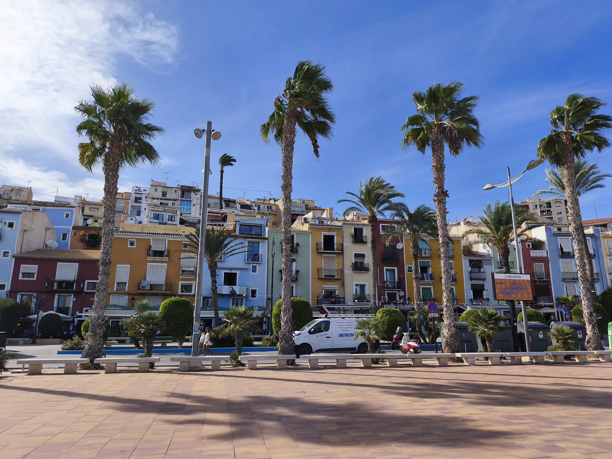

PATRÍCIA
BARBOSA
Sou estudante finalista da Licenciatura em Multimédia na EsACT-IPB, com interesse pelas áreas de design gráfico, desenvolvimento web, UX/UI Design e comunicação digital. Ao longo do meu percurso académico desenvolvi projetos que unem criatividade e tecnologia, explorando diferentes áreas da multimédia desde identidade visual, fotografia, vídeo, motion graphics e desenvolvimento de interfaces.
Informação
Nome
Patrícia Barbosa
Área
Multimédia
Instituição
EsACT-IPB
Ano
2026
Percurso Académico
O meu percurso na área da Multimédia começou com o objetivo de explorar
a ligação entre criatividade, comunicação e tecnologia.
Durante a Licenciatura em Multimédia na EsACT-IPB,
desenvolvi competências em várias áreas, desde o design visual até ao
desenvolvimento de soluções digitais interativas.
Ao longo do curso participei em diferentes projetos académicos,
trabalhando áreas como identidade visual, fotografia, edição de vídeo,
UX/UI Design, desenvolvimento web e produção multimédia.
Formação
Curso
Licenciatura em Multimédia
Instituição
EsACT-IPB
Área
Comunicação e Tecnologia
Competências
Design Gráfico
Criação de identidades visuais, composição gráfica e desenvolvimento de
materiais digitais.
UX/UI Design
Planeamento de interfaces, criação de protótipos e melhoria da
experiência do utilizador.
Desenvolvimento Web
Criação de páginas web através de HTML, CSS, PHP e integração de bases
de dados.
Multimédia
Produção e edição de imagem, vídeo, animação e conteúdos digitais.
Fotografia
Captura, edição e tratamento de imagem para diferentes contextos
criativos.
Ferramentas
Adobe Illustrator
Adobe Photoshop
Adobe Premiere
After Effects
Lightroom
Figma
Visual Studio Code
Áreas Criativas
As áreas que mais despertam o meu interesse dentro da Multimédia estão
relacionadas com a criação de experiências visuais e digitais.
Tenho especial interesse por:
• Branding e identidade visual;
• Design de interfaces;
• Fotografia criativa;
• Motion Graphics;
• Desenvolvimento web;
• Comunicação digital.
A Minha Abordagem
Acredito que o design deve unir criatividade, funcionalidade e comunicação. Cada projeto é uma oportunidade para transformar ideias em experiências visuais capazes de transmitir uma mensagem clara e criar uma ligação com o utilizador. O meu objetivo enquanto profissional da área da Multimédia é continuar a evoluir, explorando novas ferramentas e desenvolvendo soluções digitais inovadoras.
Valores
Criatividade
Organização
Aprendizagem contínua
Atenção ao detalhe
Comunicação visual
Vamos Criar Algo?
Se procuras uma pessoa criativa, dedicada e apaixonada por comunicação visual e tecnologia, entra em contacto comigo.
Contactar